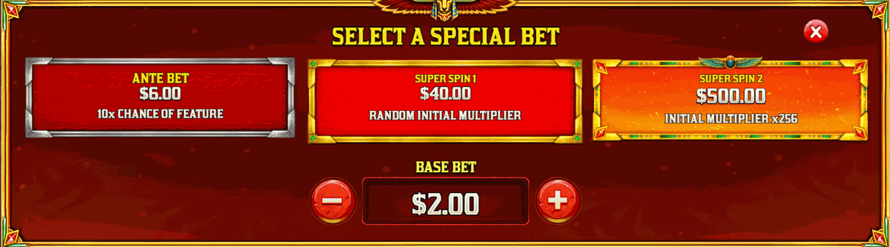

Learn the controls, understand the feature choices, set firm limits and avoid the myths that lead to chasing losses.
Beginner Strategy
If you're new to pays-anywhere multiplier slots, start with the free demo. There is no number of spins that guarantees a bonus, and the provider does not publish a natural trigger frequency. Use the game information screen for the exact rules in the version you open.
1
Start in Demo Mode
Use virtual credits to learn the controls, pays-anywhere wins and multiplier sequence. A demo sample cannot predict future results.
2
Set a Session Limit
Decide your maximum loss and time limit before you spin, then stick to both. The provider does not publish a natural bonus frequency, so do not chase a feature based on an assumed average.
3
Don't Chase
The RTP is 96.52% over millions of spins. Short-term sessions deviate significantly. If you hit your limit, stop — no spin is more likely to produce a bonus than the last.
4
Use Demo First
Play 100+ free demo spins before wagering real money. Understand how the tumble multiplier builds and how the gamble feature works before it costs you.
Bankroll Management
The provider does not publish a numerical volatility score or hit frequency for Fury of Anubis on its public page. Plan around a fixed loss and time limit rather than an assumed session profile.
A safer session plan
Choose a loss limit and a stop time before opening the game. Keep money for bills and savings outside the gambling balance, avoid increasing the stake after a loss, and stop immediately when either limit is reached. Demo spins can teach the interface, but they cannot establish a reliable bonus frequency or predict the next result.
💡
No system changes the house edge. RTP is a long-run theoretical measure, and no staking pattern makes a bonus due.
Gamble Feature — Understand the Trade-off
Before free spins begin, the game can offer a chance to double the starting multiplier. Losing the gamble can forfeit the awarded feature. Pragmatic Play's public page does not state that taking the gamble creates a player advantage.
Accept the Awarded Feature
Keeping the awarded starting multiplier avoids the extra risk of losing the feature. It does not guarantee a profitable result.
Test the Decision in Demo
Use virtual credits to see how the gamble screen works and what happens after a win or loss before considering it with real money.
Read the Exact Rules
Feature behaviour and availability can vary by market or game configuration. Use the information panel in the version you opened.
Never Chase a Lost Feature
If the gamble loses, do not increase the bet or buy another feature to recover it. Return to your preset limits or stop the session.

Fury of Anubis Buy Feature menu — the five bonus buy options priced from 100x to 800x your bet
Bonus Buy — Compare the Options
🎯 Random Free Spins (175×)
Uses a random starting multiplier between ×8 and ×64 in supported configurations. The random tier does not guarantee better value or a profit.
⚡ Free Spins 4 (800×)
The highest listed fixed entry starts at ×64, but it also costs 800× the base bet. A higher starting multiplier does not guarantee a positive return.
💸 Free Spins 1 (100×)
The lowest listed fixed entry starts at ×8. It still costs 100× the base bet and can return less than its purchase price.
🔥 Super Spin 2 (250×)
A high-cost single-spin option shown in supported configurations. Confirm the starting multiplier, cap and exact rules in the loaded game before using it.
Myths vs Reality
These misconceptions cost players money. Here's the truth.
✗
Myth: "The slot is hot/cold after a big win"
Reality: Each spin is independent. RNG means the outcome of spin #501 is in no way influenced by spin #500. There is no memory in the machine.
✗
Myth: "Changing bet size forces a bonus"
Reality: No published Fury of Anubis rule says that raising the ordinary stake makes a bonus due. Treat optional modes separately and read their in-game terms.
✗
Myth: "The 96.52% RTP means I'll get back $96.52 per $100"
Reality: RTP is a theoretical long-run average across billions of spins. In a 100-spin session you might return 30% or 300% — variance is the entire point of the game.
✗
Myth: "Bonus Buy has better odds than base game"
Reality: Bonus Buy guarantees entry into the feature, but it doesn't change the RTP of the free spins themselves. It's a convenience — not a cheat code.
Best Settings for Demo Testing
Use these demo sessions to build real understanding before wagering real money:
A
Session 1: Base Game Feel
100 spins at default bet, no Ante Bet, no Bonus Buy. Track how many wins you get, how often multipliers chain above ×8, and how long between bonuses.
B
Session 2: Feature Mode Test
Use virtual credits to inspect the optional mode’s displayed cost and behaviour. Do not use 100 spins to claim a reliable trigger frequency or expected return.
C
Session 3: Bonus Buy Comparison
Buy 10 bonuses across different tiers (100×, 175×, 400×). Compare average returns. This gives you a personal feel for the variance within each tier.
D
Session 4: Gamble Feature
Every time you trigger a bonus, take the gamble. Over 10+ triggers you'll build intuition for the risk distribution. Always double-gambling will feel very different to never gambling.
Neither option guarantees better value. Compare the exact in-game cost and rules, test with virtual credits, and avoid either option if the loss would exceed your preset limit.
The gamble can increase the starting multiplier, but it can also forfeit the awarded feature. The provider does not state that taking it creates an advantage. Test it with virtual credits and never chase a lost feature.
There is no universally best option and none guarantees profit. Each changes the cost and starting multiplier. Compare the exact in-game rules and only use an option within a preset loss limit.